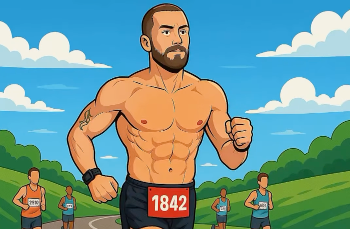

DodgyTracker
Day 5 / 365
Current Pot
£50
When I show up every remaining day
£3,650
If I fail every remaining day
£117,427,129,138,691,661,394,474,029,839,466,851,368,784,127,445,415,993,535,364,548,576,610,451,255,730,422,173,184,949,919,238,435,151,596,748,800